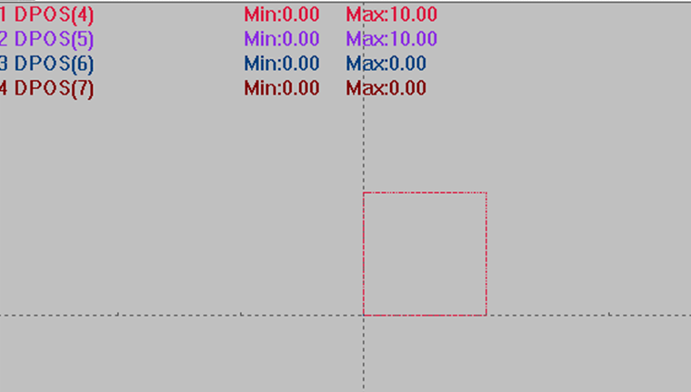

|
类型 |
运动指令 |
|
描述 |
不带加减速的运动指令，支持us级别的时间控制。 使用FORCE_SPEED与矢量距离直接计算出运行时间，例如振镜矢量距离1，FORCE_SPEED=10000，运动时间为1/10000，单位s，即100us。 支持MOVESCANABS绝对运动。 需要振镜控制器固件版本20180714以上。
拐角延时、ZSMOOTH在此运动下意义为最大的拐角延时、实际的延时时间在DECEL_ANGLE与STOP_ANGLE之间线性分布。 CORNER_MODE的bit1位设置是否使用拐角延时，开启之后ZSMOOTH设置要延时的最大时间，微秒单位，运动符合拐角条件延时。 可以与MOVE_WAIT、MOVE_OP一起实现us级别的时间控制。 非振镜轴也可以使用，但要自己分段控制速度来做加减速。 |
|
语法 |
MOVESCAN(pos1[,pos2] [,pos3]…) pos1：第一个轴运动距离 pos2：下一个轴运动距离 |
|
适用控制器 |
振镜控制器 |
|
例子 |
例一 BASE(4,5) AXIS_ZSET=2 '开启精准输出 TRIGGER CORNER_MODE=0 '无拐角延时 MOVE_PAUSE(3) '强制暂停 MOVE_OP(0,1) FORCE_SPEED=10000 MOVESCANABS(0,0) MOVESCANABS(10,0) '振镜运动，时间10/10000=1000us MOVESCANABS(10,10) '振镜运动 MOVESCANABS(0,10) '振镜运动 MOVESCANABS(0,0) 振镜运动 MOVE_DELAY(0.25) '延时250us MOVE_OP(0,0) '输出 MOVE_RESUME END
振镜轴XY模式下合成轨迹如下 DPOS(4)垂直刻度10 DPOS(5)垂直刻度10 
例二 BASE(4,5) AXIS_ZSET=2 CORNER_MODE=2 '拐角延时 ZSMOOTH=100 '拐角最大延时100u DECEL_ANGLE = 25 * (PI/180) '设置开始减速拐角，弧度 STOP_ANGLE = 90 * (PI/180) '设置结束减速拐角，弧度 MOVE_PAUSE(3) MOVE_OP(0,1) FORCE_SPEED=10000 MOVESCAN(1,0) '运动100us的时间 MOVESCAN(0,1) '加100us拐角延时，再运动100us的时间 MOVE_DELAY(0.25) MOVE_OP(0,0) '550us以后输出 MOVE_RESUME |
|
相关指令 |